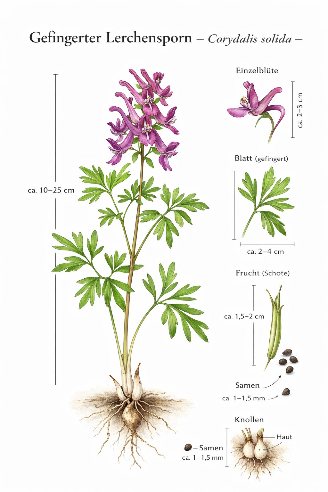
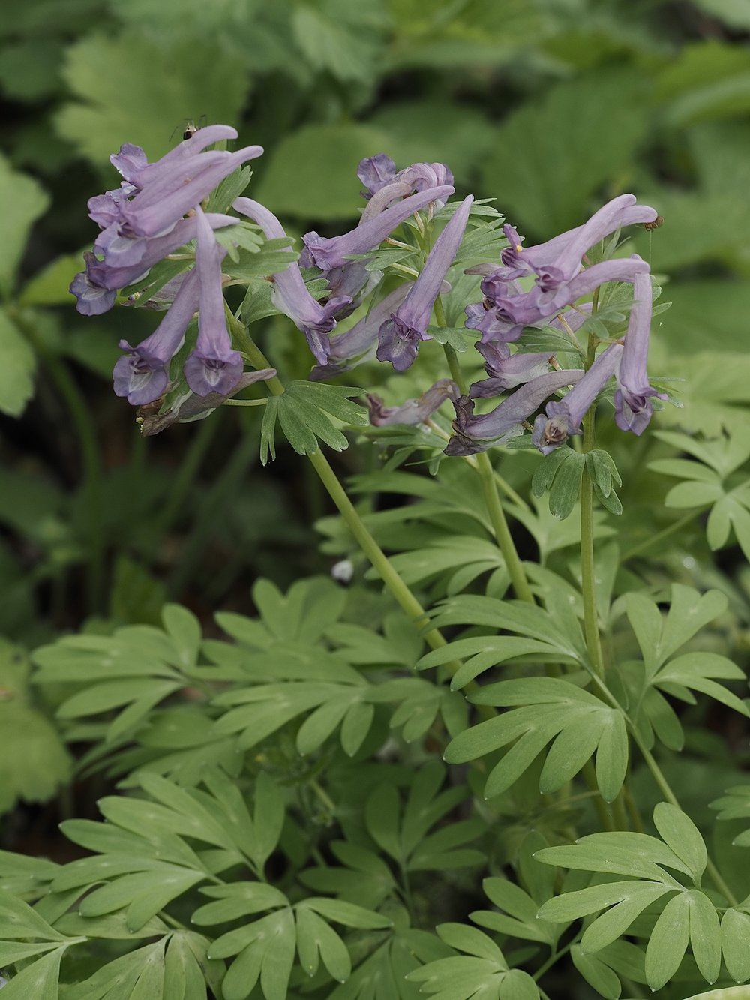
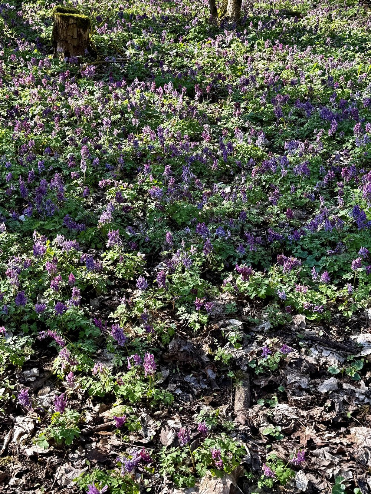

Nr. 6 · Frühblüher im Wald
Gefingerter Lerchensporn
Corydalis solida
Ein Schloss, das nur ein Schlüssel öffnet – und Diebe, die es trotzdem knacken.



Das Schloss-Schlüssel-Prinzip
Der lange Nektarsporn ist eine Zugangssperre: Nur langrüsselige Hummeln kommen ans Nektar. Kurzrüsselige Hummeln sind cleverer als die Pflanze dachte – sie beissen einfach ein Loch in den Sporngrund und stehlen den Nektar, ohne zu bestäuben. ‚Nektarraub' nennen Biologen das. Die Pflanze investiert viel – und bekommt manchmal nichts dafür.
Ameisen als Paketdienst
Die Samen tragen ein ölreiches Fett-Päckchen (Elaiosom) – ein Köder speziell für Ameisen. Diese schleppen die Samen bis zu 70 Meter weit, fressen das Fett-Häppchen und lassen den Samen zurück. Myrmekochorie heisst das System – so alt wie die Kreidezeit und noch immer so zuverlässig wie am ersten Tag.
Wissenswertes & Merksätze
Hohl vs. voll
Hohler Lerchensporn = hohle Knolle + ungeteilte Deckblätter. Gefingerter = volle Knolle + fingerartig geteilte Deckblätter. Im Feld ist das Deckblatt am leichtesten zu prüfen.
Farbspektrum
Von helllila über rosa bis fast weiss – manchmal alle Morphen gleichzeitig an einem Standort. Hummelarten bevorzugen möglicherweise verschiedene Farben.
Tetrahydropalmatine
Aus verwandten Corydalis-Arten werden diese als opiatfreie Schmerzalternative untersucht – ein modernes Kapitel in einer jahrtausendealten Heilpflanzengeschichte.